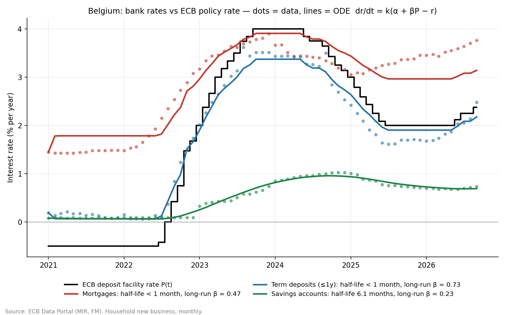
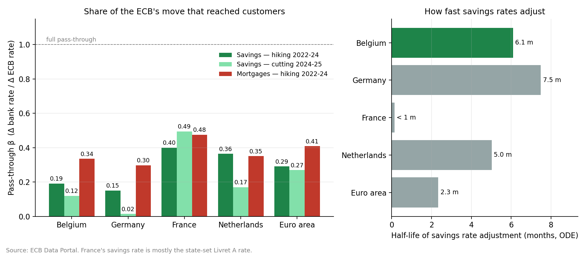
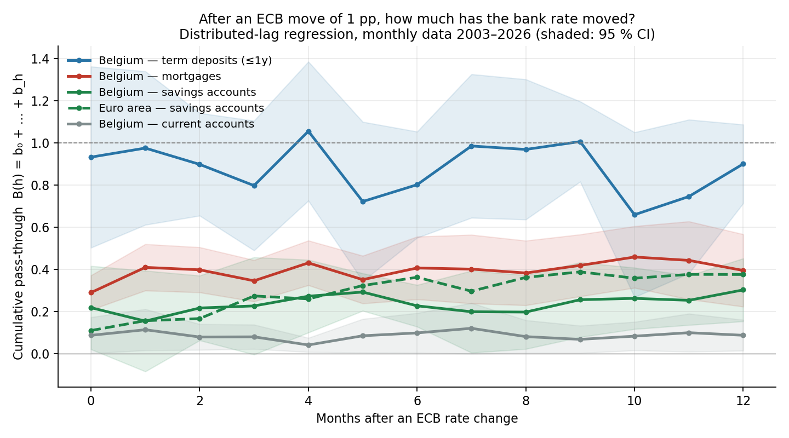

Advanced Mathematics for Business & Technology · VUB · 2026
The sticky savings rate
The ECB raised its policy rate by 4.5 percentage points in fourteen months. Belgian mortgage rates followed within weeks. Belgian savings rates barely moved. This page measures how slowly they moved, using a differential equation and twenty years of ECB data.
1 · Why this question
Most Belgian household savings sit in regulated savings accounts (gereglementeerde spaarrekening / compte d'épargne réglementé). These accounts are tax-advantaged and banks can change their rate at any time. When the ECB started raising rates in July 2022, banks could suddenly earn up to 4 % on the money they parked at the central bank. Savers kept earning well under 1 %.
This became a political issue in 2023. The finance minister criticised the banks publicly, and in September 2023 the Belgian state sold a one-year state note directly to households at 2.81 % net. It raised about €22 billion, the largest such issue on record. My question is whether this frustration is visible in the data, and whether Belgium was really worse than its neighbours.
2 · Data
All data comes from the public ECB Data Portal. It covers January 2003 to September 2026, monthly, for Belgium, Germany, France, the Netherlands and the euro area:
- ECB deposit facility rate \(P(t)\), the rate banks earn on money parked at the ECB. The ECB publishes it daily and I average it per month.
- Bank interest rates (MIR statistics) on household products: savings accounts (notice ≤ 3 months), current accounts, term deposits (≤ 1 year) and mortgages. These are new-business rates, in % per year.
That gives 21 series of 285 months each. A single script (src/01_download_data.py) downloads everything again through the ECB's API.
3 · Analysis 1: an ODE for the bank rate
A bank's rate does not jump to a new level when the ECB moves. It drifts towards a target, and it drifts faster when it is further away from that target. That gives a first-order linear differential equation:
- \(\alpha + \beta P\) is the long-run target. In the long run, a 1 pp ECB hike raises the bank rate by \(\beta\) pp. When \(\beta = 1\) the full hike reaches customers; when \(\beta = 0.2\) only a fifth does.
- \(k\) is the speed. Each month the bank closes a share \(1-e^{-k}\) of the gap, so the half-life is \(\ln 2 / k\) months.
Solving it
Rewrite the equation as \(r' + k r = k(\alpha + \beta P)\) and multiply by the integrating factor \(e^{kt}\). If the ECB rate is constant at \(P_n\) during month \(n\), the exact solution over that month is
Starting from the observed rate in January 2021, I solve the equation forward month by month. I then pick \(k, \alpha, \beta\) so the solved path is as close as possible to the data (non-linear least squares with scipy.optimize.least_squares). As a check, I also integrate the equation numerically with scipy.integrate.solve_ivp. The two paths differ by less than 0.000002 percentage points.

| Belgium | Half-life | Long-run β | α | R² |
|---|
"< 1 month" means the fitted speed hit its upper limit: the rate adjusts within the same month, so no precise half-life can be measured from monthly data.
Explore every country and product
4 · Analysis 2: how much of each move gets through?
The ODE assumes one smooth exponential path. Analysis 2 checks the result with two methods that assume much less.
(A) Pass-through per phase. For the hiking phase (June 2022 → May 2024) and the cutting phase (May 2024 → December 2025), I compute
(B) Distributed-lag regression on the full 2003–2026 history:
Here \(b_j\) is the effect on this month's bank rate of an ECB move \(j\) months ago. The cumulative sum \(B(h)\) is the share of a move passed on after \(h\) months. I estimate it by OLS with Newey–West standard errors, because monthly rate changes are autocorrelated.


| Savings accounts | ODE β (2021–26) | β hiking | β cutting | DL B(12) (2003–26) | ODE half-life |
|---|
5 · What it means
- Belgian savers got about a fifth of the ECB's hikes. Three different methods agree. The ODE gives a long-run β of 0.23, the hiking phase gives 0.19, and the 2003–2026 regression gives 0.30. When the ECB paid banks 4 %, the model's long-run target for the savings rate was only about 1.1 %, and the actual rate peaked at 1.03 % in November 2024.
- It was also slow. The ODE half-life is 6.1 months, so the Belgian savings rate closed only about 11 % of its gap each month. That is why the rate was still at 0.09 % in December 2022, by which time the ECB had raised its rate to 2 %.
- Banks can move fast when they have to. Belgian one-year term deposits passed on 73 % of the hikes within the same month, and mortgages rose before the ECB even started. The slowness is specific to savings and current accounts, where money stays put because customers rarely switch banks.
- Belgium was among the lowest, but not alone. Belgium's savings pass-through (0.19) is below the euro area (0.29) and the Netherlands (0.36), and close to Germany (0.15). France looks generous, but its savings rate is mostly the government-set Livret A rate, not a bank decision.
- On the way down, savings rates were sticky too. Savings rates fell by only 0.12 pp per 1 pp of ECB cuts. Because they had risen so little, there was little to give back, and the gap between the ECB rate and the savings rate shrank as the ECB cut.
Limitations
- The ODE has no anticipation. Mortgage rates are priced off market rates that move before the ECB acts, so the fit for mortgages is weaker (R² 0.85). A delay or expectations term would improve it.
- Monthly data cannot measure adjustment faster than one month. Those cases show as "< 1 month".
- These are national averages. Some Belgian banks and online banks paid much more than the average rate.
- Belgian savings accounts have a legal minimum rate, and part of the return is a loyalty premium paid after 12 months. The data reports the average rate, which mixes both.
6 · Reproduce it
All code, data and figures are in the GitHub repository.